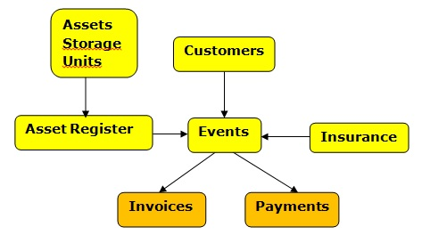
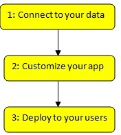
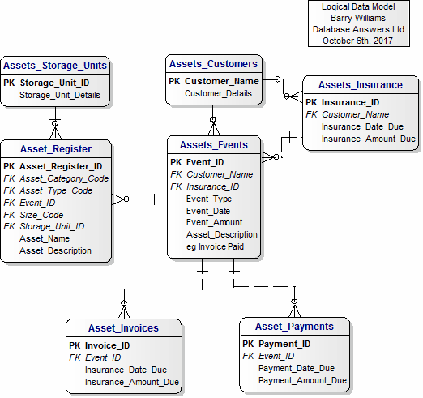
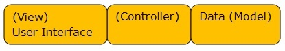
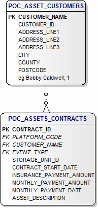
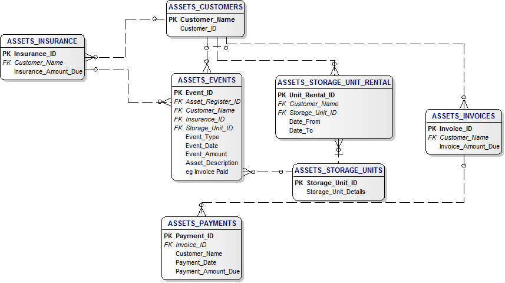
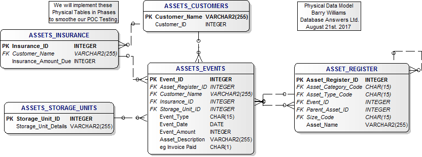
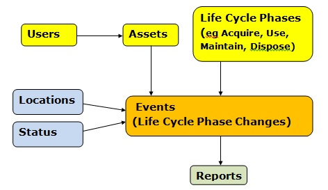

|
An Access Database is available.
We might also design a Data Mart which is very useful for providing data for Reports and Business Intelligence.
We would be glad to have your comments.
If you are new to Data Models, this page of my new Tutorial will help you understand the Data Model.
Our Asset Management Self-Service can be used for a wide range of things (ie Assets), including IT Equipment, Household Items and Utilities EQuipment including Electricity, Gas, Water and Transport, such as Airport, and Rail.
Click here to see the Requirements that have been derived from a review of the Wikipedia entry for
Asset Management.
Here is a summary of What Wikipedia says :-
"Asset Management Self-Service, broadly defined, refers to any system that monitors and maintains things of value to an entity or group.
It may apply to both tangible assets [that you can see and touch] (such as buildings) and to intangible assets such as human capital, intellectual property, goodwill and/or financial assets). Asset Management Self-Service is the process of maintaining assets."
For our purposes, we define Asset Management Self-Service as "Storing physical items, such as furniture, for customers for a fee and recording details of what it in store and for how long and producing an appropriate invoice for payment by the customer".
Click here for the Proof-of-Concept
and here for the End-2-End Data Models
and here for the Tutorial.
Step 1a - Define Conceptual Data Model

|
Step 1b - Appsheet Conceptual Data Model
This is in an Appsheet paper called How to make an app

|
Step 1c - Define Logical Data Model

|
Step 1b Define MVC Conceptual Data Model

Step 2 - Here we show the MVC Component (Model) with
the associated Web Service.
Model - Add a new Asset (Create a Record)
Model - Add Payment (Update a Record)
Model - Move an ASset (Update a Record)
Model - Pay a Bill (Update a Record)
Model - Remove an Asset (Update a Record)
|
Step 1c - Define POC Logical Data Model Aug28th.

|
Step 2 - Define POC Logical Data Model

|
Step 3 - Define POC Physical Data Model
Maybe Primarily Domestic Items

|
Step 4 - Asset Register Logical Data Model
Corresponding Tables
|
Step 5 - Asset Register Physical Data Model
|
Step 6 - Asset Register Conceptual Data Model

|
Step 2 - Define Sample Data
A. Asset Hierarchy :-
1. Category, eg Domestic
2. Supertype, eg Cutlery
3. Type, eg Spoon
B. Lifecycle Phases :-
These can be common to all types of Assets and typically include :-
1. Acquire
2. Use
3. Maintain
4. Dispose
C. Status :-
1. Needs Maintenance
2. OK
3. Ready for Disposal
|
Step 10 - Start with our Canonical Data Model

|
Barry Williams
Principal Consultant
Database Answers Ltd.
London, England
August 22nd. 2017
|
© DataBase Answers Ltd. 2017
|